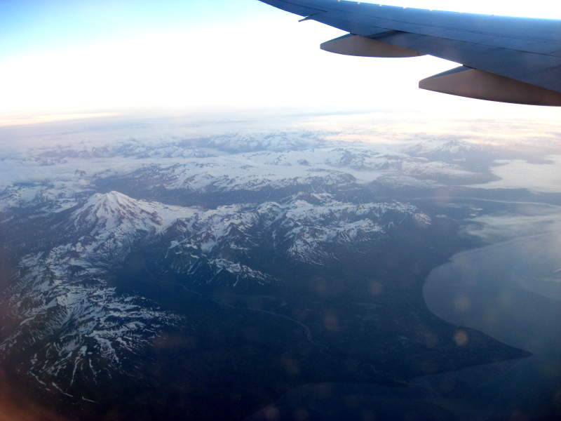

Sadly, it was time to go. My oriental experience was about to end. Never again will I see a Japanese person. Well, one of my new officemates is Japanese, so maybe that's not the case. When we were waiting in the airport, we saw small people surround us. Most Japanese people are smaller than us, but these people were unusually small. We look up and see these children. They had Paul surrounded. Each one of the little sorceresses said her name aloud, then, in unison, as if they were possessed, chanted "May we ask you some questions?" They silently waited for an answer. Paul relented with an affirmation.

They had Paul stare at their mystical symbols and choose which identified his weakness. Then after continuing to chant and flipping through the rest of their parchments, they ensorcelled Miller and I fell victim last. It's possible they were not sorceresses and instead some kids from an English class just getting some practice, but, I find that hard to believe.

As the plane taxied to the runway, I saw something that amazed me. The Japanese were so polite during our entire vacation. We saw four of the ground crew out there lined up, waving to us. It was such a nice gesture! Finally, we were back up in the air. We had a far less cloudy view than the flight in. I was able to see many more mountains.
As we were flying over alaska, I wondered on occasion if I was looking at Mount McKinley. I compared these mountains to pictures of Mount McKinley afterward, and the short answer is "no".

Flying is fun. Window seats are great, until you need to go to the bathroom. A guy in the aisle seat, at the beginning of the flight, told me he was taking a sleeping pill and would be asleep for the whole flight, and I should just push past him if I wanted to get out. There was no leg room to begin with, so pushing past someone sitting there was just about impossible. Fortunately he woke up 3 hours later.
Okay, enough bitching. Back to the cool mountain shots. After so much time sweating in sweltering heat, this looked sooooo refreshing.
Well, this was my last picture before we landed and I realized how much work it'd be to put all these pictures online. I saw the river down there and couldn't resist. I would give Japan a big thumbs up though. I didn't expect it would be as wonderful a vacation as it was, but it was unforgettable. Especially the fish head.
Back